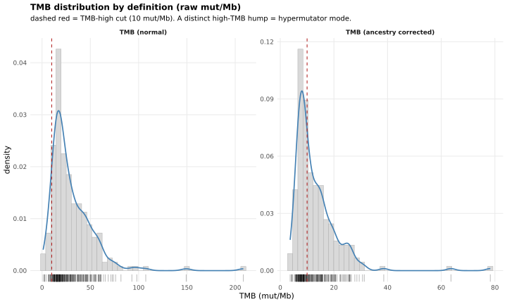
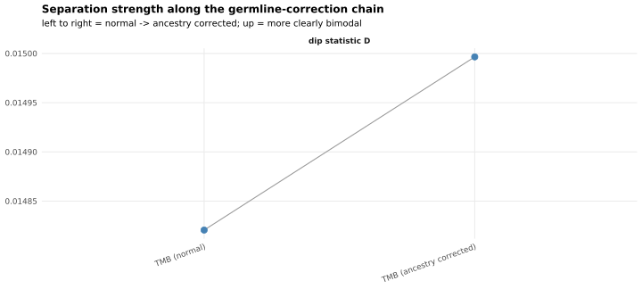
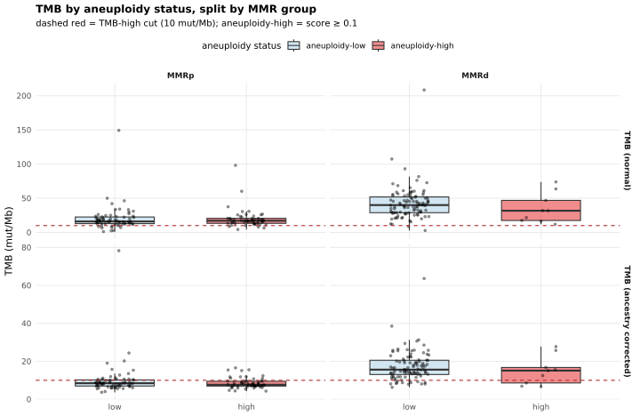
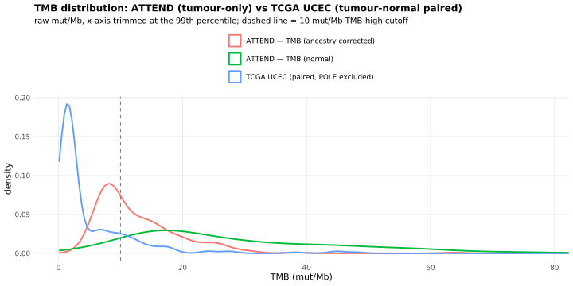
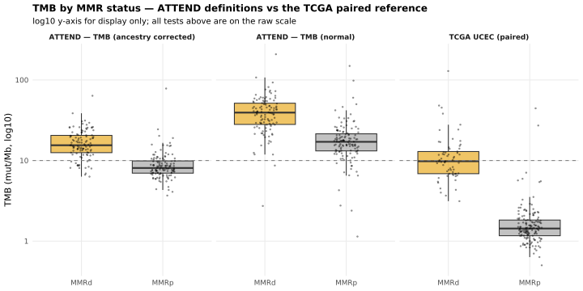

Last updated: 2026-08-13
Checks: 7 0
Knit directory:
attend_aneuploidy/analysis/
This reproducible R Markdown analysis was created with workflowr (version 1.7.2). The Checks tab describes the reproducibility checks that were applied when the results were created. The Past versions tab lists the development history.
Great! Since the R Markdown file has been committed to the Git repository, you know the exact version of the code that produced these results.
Great job! The global environment was empty. Objects defined in the global environment can affect the analysis in your R Markdown file in unknown ways. For reproduciblity it’s best to always run the code in an empty environment.
The command set.seed(20260622) was run prior to running
the code in the R Markdown file. Setting a seed ensures that any results
that rely on randomness, e.g. subsampling or permutations, are
reproducible.
Great job! Recording the operating system, R version, and package versions is critical for reproducibility.
Nice! There were no cached chunks for this analysis, so you can be confident that you successfully produced the results during this run.
Great job! Using relative paths to the files within your workflowr project makes it easier to run your code on other machines.
Great! You are using Git for version control. Tracking code development and connecting the code version to the results is critical for reproducibility.
The results in this page were generated with repository version ed3a227. See the Past versions tab to see a history of the changes made to the R Markdown and HTML files.
Note that you need to be careful to ensure that all relevant files for
the analysis have been committed to Git prior to generating the results
(you can use wflow_publish or
wflow_git_commit). workflowr only checks the R Markdown
file, but you know if there are other scripts or data files that it
depends on. Below is the status of the Git repository when the results
were generated:
Ignored files:
Ignored: .Rhistory
Ignored: .Rproj.user/
Ignored: data/aneu_scores.csv
Ignored: data/attend_barcodes.csv
Ignored: data/attend_data.xlsx
Ignored: data/clinical_gianlu_data.csv
Ignored: data/cnv_annotations/
Ignored: data/gistic/
Ignored: data/hrd_scores.csv
Ignored: data/msi_scores.csv
Ignored: data/old_gistic/
Ignored: data/seg/
Ignored: data/tcga_2013/
Ignored: data/tmb_scores.csv
Ignored: data/variant_annotations/
Ignored: output/clean_data/
Note that any generated files, e.g. HTML, png, CSS, etc., are not included in this status report because it is ok for generated content to have uncommitted changes.
These are the previous versions of the repository in which changes were
made to the R Markdown (analysis/08-tmb.Rmd) and HTML
(docs/08-tmb.html) files. If you’ve configured a remote Git
repository (see ?wflow_git_remote), click on the hyperlinks
in the table below to view the files as they were in that past version.
| File | Version | Author | Date | Message |
|---|---|---|---|---|
| Rmd | bf0f0f8 | bolt3x | 2026-08-13 | :bug: Expose tmb_long()’s filtered def_cols; switch off report 05’s highlight overlay |
| Rmd | 1592d06 | bolt3x | 2026-08-13 | :sparkles: Add report 06-response, fix duplicate chunk labels, renumber 07-09 |
Question. Does TMB split the cohort into two populations, does that split track aneuploidy within each MMR stratum, and does it reproduce in a paired-sequencing cohort? Cohort. All 245 patients; Part 2 is stratified by MMR, Part 3 compares against TCGA UCEC. Reads. The master (built on demand), plus data/tcga_2013/ for Part 3. Out of scope. How the ancestry correction works, and why there are exactly two definitions -> 00-methods.
A genuine second mode at high TMB is the hypermutator population: MMR-deficient tumours whose failed mismatch repair produces an order of magnitude more mutations. ATTEND has no POLE cases, the other hypermutator route, so the question is whether TMB by itself identifies the hypermutators.
Every distribution and every test is on the raw mut/Mb scale, with no log transform. On that scale a long tail and a genuine second mode look alike, which is why Part 1 triangulates three independent criteria rather than trusting any one of them.
A genuine second mode at high TMB is the hypermutator population: MMR-deficient tumours whose failed mismatch repair produces an order of magnitude more mutations. POLE- ultramutated tumours are the other hypermutator route, and ATTEND has none, so the question is really whether TMB by itself cleanly identifies the hypermutators.
Four steps: describe each distribution, test for bimodality under three independent criteria, validate any second mode against MMR status, and — in 08-tmb — reproduce the whole thing in TCGA UCEC, where the answer is externally known.
Comparing the two definitions is a second question this report answers. Tumour-only TMB carries ancestry-dependent germline inflation, which is noise added to the signal, so removing it should deepen the valley between the modes. If the corrected definition is more clearly bimodal than the uncorrected one, the correction is doing something real; if not, it is not helping the split, and the battery below says so either way.
Every distribution and every test is on the raw mut/Mb scale, with no log transform. TMB is heavily right-skewed, and on that scale a long tail and a genuine second mode can look alike, which is why three independent criteria are triangulated rather than trusting any one of them.
The tmb__* columns of the master, reshaped to one row per patient and definition. Definitions with fewer than 10 finite values are dropped: the ancestry-corrected column is all-NA until attend_ancestry$clinical_col is set, and a distribution test needs values.
Per-definition summary of the raw TMB. %high is the fraction at or above the pipeline TMB-high cut (attend_thresholds$tmb = 10 mut/Mb), via the shared tmb_class_of() — the same high/low split every TMB-keyed figure uses.
if (nrow(long) > 0) {
summ <- long |>
group_by(definition) |>
summarise(
n = dplyr::n(),
median = median(tmb),
IQR = IQR(tmb),
mean = mean(tmb),
sd = sd(tmb),
min = min(tmb),
max = max(tmb),
skew = unname(.skew_kurt(tmb)["skew"]),
exkurt = unname(.skew_kurt(tmb)["kurt"]),
`%high` = 100 * mean(tmb_class_of(tmb) == "TMB-high"),
.groups = "drop"
)
knitr::kable(summ, digits = 2,
caption = "Raw TMB (mut/Mb) by definition. High right-skew (large positive `skew`) is expected and is itself a hint of a heavy hypermutator tail.")
} else {
cat("No TMB values present — nothing to summarise.\n")
}| definition | n | median | IQR | mean | sd | min | max | skew | exkurt | %high |
|---|---|---|---|---|---|---|---|---|---|---|
| TMB (normal) | 234 | 23.30 | 24.46 | 30.28 | 23.10 | 1.14 | 208.42 | 3.12 | 17.49 | 93.59 |
| TMB (ancestry corrected) | 234 | 10.58 | 7.97 | 13.03 | 8.27 | 3.68 | 78.29 | 3.53 | 21.46 | 52.56 |
Kernel density of the raw mut/Mb values in long, one curve per definition, with the 10 mut/Mb cutoff marked. A valley between two humps is the shape the battery below puts numbers on.
if (nrow(long) > 0) {
ggplot(long, aes(tmb)) +
geom_histogram(aes(y = after_stat(density)), bins = 40,
fill = "grey85", colour = "grey65", linewidth = 0.2) +
geom_density(colour = "steelblue", linewidth = 0.8, adjust = 0.9, na.rm = TRUE) +
geom_rug(alpha = 0.25) +
geom_vline(xintercept = attend_thresholds$tmb, linetype = "dashed",
colour = "firebrick") +
facet_wrap(~ definition, scales = "free") +
labs(title = "TMB distribution by definition (raw mut/Mb)",
subtitle = paste0("dashed red = TMB-high cut (", attend_thresholds$tmb,
" mut/Mb). A distinct high-TMB hump = hypermutator mode."),
x = "TMB (mut/Mb)", y = "density") +
attend_theme()
} else {
message("No TMB values to plot.")
}
Three independent criteria per definition, because on the raw scale no single test is decisive:
The verdict calls a definition bimodal when ≥ 2 of the 3 criteria agree — a deliberately conservative majority vote.
if (nrow(long) > 0) {
battery <- tmb_battery(long, by = "definition")
knitr::kable(
battery |>
transmute(definition, n,
dip_D = round(dip_D, 4), dip_p = signif(dip_p, 3), dip_bimodal,
BC = round(BC, 3), BC_bimodal,
gmm_G, gmm_bimodal,
votes, verdict),
caption = "Bimodality battery per TMB definition. verdict = bimodal when >= 2 of {dip, BC, GMM} agree."
)
} else {
battery <- tibble()
cat("No TMB values — bimodality battery skipped.
")
}| definition | n | dip_D | dip_p | dip_bimodal | BC | BC_bimodal | gmm_G | gmm_bimodal | votes | verdict |
|---|---|---|---|---|---|---|---|---|---|---|
| TMB (normal) | 234 | 0.0148 | 0.991 | FALSE | 0.523 | FALSE | NA | FALSE | 0 | unimodal |
| TMB (ancestry corrected) | 234 | 0.0150 | 0.991 | FALSE | 0.549 | FALSE | NA | FALSE | 0 | unimodal |
The same table read back as sentences, one line per definition, so the vote and its verdict are stated rather than inferred from the columns.
if (exists("battery") && nrow(battery) > 0) {
bm <- battery |> filter(verdict == "bimodal") |> pull(definition) |> as.character()
if (length(bm)) {
cat("**Bimodal by majority vote:** ", paste(bm, collapse = ", "), ".\n\n", sep = "")
} else {
cat("**No definition reaches the ≥2-of-3 bimodality threshold** on the raw scale. ",
"The high-TMB signal may be a heavy tail rather than a resolved second mode — ",
"revisit on a log scale if a hypermutator subpopulation is expected.\n\n", sep = "")
}
}No definition reaches the ≥2-of-3 bimodality threshold on the raw scale. The high-TMB signal may be a heavy tail rather than a resolved second mode — revisit on a log scale if a hypermutator subpopulation is expected.
A statistical second mode is only interesting if it is the biological one. For every definition the mixture split into ≥ 2 components, we assign each patient to a component by posterior, label the highest-mean component as the high-TMB mode, and cross-tabulate that membership against MMR status (gianlu__MMR_STATUS, via the shared is_mmrd()). A Fisher test asks whether the high-TMB mode is enriched for MMR-deficient tumours — the expected hypermutators.
mmr_col <- attend_cols$mmr_status # gianlu__MMR_STATUS
validate_mode <- function(def_key, def_lab) {
col <- def_cols[[def_key]]
d <- master |>
transmute(pid,
tmb = suppressWarnings(as.numeric(.data[[col]])),
mmrd = is_mmrd(.data[[mmr_col]])) |>
filter(is.finite(tmb))
if (nrow(d) < 6) return(NULL)
mc <- tryCatch(mclust::Mclust(d$tmb, G = 1:3, verbose = FALSE), error = function(e) NULL)
if (is.null(mc) || mc$G < 2) return(NULL)
hi_comp <- which.max(as.numeric(mc$parameters$mean)) # highest-mean component
d$hi_mode <- factor(if_else(mc$classification == hi_comp, "high-TMB mode", "bulk"),
levels = c("bulk", "high-TMB mode"))
d2 <- d |> filter(!is.na(mmrd))
if (nrow(d2) < 4 || dplyr::n_distinct(d2$hi_mode) < 2 || dplyr::n_distinct(d2$mmrd) < 2)
return(list(lab = def_lab, tab = table(d$hi_mode), p = NA_real_))
tab <- table(MMR = if_else(d2$mmrd, "MMRd", "MMRp"), mode = d2$hi_mode)
p <- tryCatch(fisher.test(tab)$p.value, error = function(e) NA_real_)
list(lab = def_lab, tab = tab, p = p)
}
if (!have_mclust) {
cat("_`mclust` not installed — mode validation skipped._\n\n")
} else if (!mmr_col %in% names(master)) {
cat("_MMR status column (`", mmr_col, "`) absent from the master — mode validation skipped._\n\n", sep = "")
} else if (!exists("battery") || nrow(battery) == 0) {
cat("_No definitions to validate._\n\n")
} else {
qualifying <- battery |> filter(is.finite(gmm_G) & gmm_G >= 2) |> pull(definition) |> as.character()
key_by_lab <- setNames(names(def_cols), unname(def_labels))
if (!length(qualifying)) {
cat("_No definition produced a ≥2-component mixture — no high-TMB mode to validate._\n\n")
} else {
for (lab in qualifying) {
res <- validate_mode(key_by_lab[[lab]], lab)
if (is.null(res)) next
cat("### ", res$lab, "\n\n", sep = "")
print(knitr::kable(as.data.frame.matrix(res$tab),
caption = paste0("High-TMB mode membership vs MMR status — ", res$lab)))
cat("\n\nFisher exact p = ",
if (is.finite(res$p)) signif(res$p, 3) else "NA (a margin was degenerate)",
if (is.finite(res$p) && res$p < 0.05) " — the high-TMB mode is significantly enriched for MMRd." else "",
"\n\n", sep = "")
}
}
}No definition produced a ≥2-component mixture — no high-TMB mode to validate.
Removing ancestry-dependent germline inflation should make the hypermutator mode stand out more: as ancestry-inflated germline counts are stripped, the bulk tightens and the valley deepens. Two comparators, read left-to-right along the chain:
have_syn <- exists("battery") && nrow(battery) > 0 &&
(any(is.finite(battery$dip_D)) || any(is.finite(battery$gmm_gap_sd)))
if (have_syn) {
syn <- battery |>
select(definition, `dip statistic D` = dip_D, `mixture gap (÷SD)` = gmm_gap_sd) |>
pivot_longer(-definition, names_to = "metric", values_to = "value") |>
filter(is.finite(value))
if (nrow(syn) > 0) {
ggplot(syn, aes(definition, value, group = 1)) +
geom_line(colour = "grey60") +
geom_point(size = 3, colour = "steelblue") +
facet_wrap(~ metric, scales = "free_y") +
labs(title = "Separation strength along the germline-correction chain",
subtitle = "left to right = normal -> ancestry corrected; up = more clearly bimodal",
x = NULL, y = NULL) +
attend_theme() +
theme(axis.text.x = element_text(angle = 20, hjust = 1))
} else {
message("No finite separation metrics to plot.")
}
} else {
message("Battery unavailable — synthesis skipped.")
}
The cross-definition comparison in words: whether moving from the delivered score to the ancestry-corrected one deepens the valley, holds it, or closes it.
if (exists("battery") && nrow(battery) > 0 && sum(is.finite(battery$dip_D)) >= 2) {
b <- battery |> filter(is.finite(dip_D))
first_lab <- as.character(b$definition[1]); last_lab <- as.character(b$definition[nrow(b)])
d_first <- b$dip_D[1]; d_last <- b$dip_D[nrow(b)]
cat("Dip D moves from ", signif(d_first, 3), " (", first_lab, ") to ",
signif(d_last, 3), " (", last_lab, "). ",
if (d_last > d_first)
"Separation **increases** after correction — consistent with the correction sharpening the hypermutator mode."
else if (d_last < d_first)
"Separation **decreases** after correction — it does not visibly sharpen the split on the raw scale (or the corrected column is too sparse to resolve it)."
else "Separation is unchanged after correction.",
"\n\n", sep = "")
}Dip D moves from 0.0148 (TMB (normal)) to 0.015 (TMB (ancestry corrected)). Separation increases after correction — consistent with the correction sharpening the hypermutator mode.
The battery is written to an intermediate for 08-tmb, which appends TCGA as one more row of this same table.
Splitting by MMR first is the point. The two routes to a high number are biologically distinct and must not be pooled: MMR-deficient tumours are hypermutators, high TMB with often-modest aneuploidy, whereas the CN-high / serous-like route drives high aneuploidy with typically low TMB. Pooling the two would let one route’s signal mask the other, so the aneuploidy-high-vs-low contrast is drawn once per MMR group and repeated across every TMB definition present.
Each point is one patient. TMB (mut/Mb, raw) comes from the tmb__* master columns via the long table above. Aneuploidy status is aneu__aneuploidy_score, the ASCETS arm-level SCNA burden from data/ascets/, split at attend_thresholds$aneuploidy = 0.1. MMR group is gianlu__MMR_STATUS collapsed to MMRd/MMRp by the shared is_mmrd(), so the split matches every other report. Patients missing an aneuploidy score or an MMR call are dropped.
aneu_col <- attend_cols$aneuploidy # aneu__aneuploidy_score
mmr_col <- attend_cols$mmr_status # gianlu__MMR_STATUS
aneu_cut <- attend_thresholds$aneuploidy
have_aneu_tmb <- nrow(long) > 0 &&
aneu_col %in% names(master) && mmr_col %in% names(master)
if (have_aneu_tmb) {
# Per-patient aneuploidy class + MMR group, joined onto the per-(patient, definition)
# TMB rows read back from report 07.
meta <- master |>
transmute(
pid,
aneu_class = factor(
if_else(suppressWarnings(as.numeric(.data[[aneu_col]])) >= aneu_cut,
"aneuploidy-high", "aneuploidy-low"),
levels = c("aneuploidy-low", "aneuploidy-high")),
mmr_group = dplyr::case_when(
is_mmrd(.data[[mmr_col]]) ~ "MMRd",
!is_mmrd(.data[[mmr_col]]) ~ "MMRp",
TRUE ~ NA_character_) |>
factor(levels = c("MMRp", "MMRd"))
)
ta <- long |>
inner_join(meta, by = "pid") |>
filter(!is.na(aneu_class), !is.na(mmr_group))
# Facet rows = TMB definitions actually present; drives the plot's fig.height below
# so each row keeps a legible height whether 1 or 4 definitions render.
n_aneu_defs <- max(1L, nlevels(droplevels(ta$definition)))
cat("patients per MMR group × aneuploidy status (baseline definition):\n")
print(ta |>
filter(definition == levels(definition)[1]) |>
count(mmr_group, aneu_class) |>
tidyr::pivot_wider(names_from = aneu_class, values_from = n, values_fill = 0))
} else {
ta <- tibble()
n_aneu_defs <- 1L
cat("Aneuploidy score (`", aneu_col, "`) or MMR status (`", mmr_col,
"`) absent from the master, or no TMB values — section skipped.\n", sep = "")
}patients per MMR group × aneuploidy status (baseline definition):
# A tibble: 2 × 3
mmr_group `aneuploidy-low` `aneuploidy-high`
<fct> <int> <int>
1 MMRp 67 57
2 MMRd 100 9The two boxplots the analysis calls for: TMB (raw mut/Mb) in aneuploidy-high vs aneuploidy-low tumours, faceted by MMR group (columns: MMRp, MMRd) and by TMB definition (rows). Boxes are filled by aneuploidy status (light blue = low, red = high — the shared attend_aneu_cols palette the other reports use); the dashed red line is the TMB-high cut (attend_thresholds$tmb = 10 mut/Mb). Points are individual patients (jittered), not group means.
if (nrow(ta) > 0) {
aneu_pal <- attend_aneu_cols
ggplot(ta, aes(aneu_class, tmb)) +
geom_boxplot(aes(fill = aneu_class), outlier.shape = NA, width = 0.6,
alpha = 0.5) +
geom_jitter(width = 0.15, height = 0, alpha = 0.4, size = 1) +
geom_hline(yintercept = attend_thresholds$tmb, linetype = "dashed",
colour = "firebrick") +
scale_fill_manual(values = aneu_pal, name = "aneuploidy status") +
# Short horizontal tick labels — the fill legend already spells out the full
# aneuploidy status, so the x-axis needn't repeat it (frees per-panel width).
scale_x_discrete(labels = c("aneuploidy-low" = "low",
"aneuploidy-high" = "high")) +
facet_grid(definition ~ mmr_group, scales = "free_y") +
labs(title = "TMB by aneuploidy status, split by MMR group",
subtitle = paste0("dashed red = TMB-high cut (", attend_thresholds$tmb,
" mut/Mb); aneuploidy-high = score ≥ ", aneu_cut),
x = NULL, y = "TMB (mut/Mb)") +
attend_theme() +
theme(axis.text.x = element_text(angle = 0),
legend.position = "top")
} else {
message("No aneuploidy/TMB data to plot.")
}
Formalising each panel at the 10 mut/Mb cut rather than by median: within every (MMR group × TMB definition) cell, patients are binarised TMB-high vs TMB-low at attend_thresholds$tmb = 10 mut/Mb via the shared tmb_class_of() (the same cut every TMB-keyed figure uses), and the table reports the count and fraction of TMB-high tumours in the aneuploidy-low vs -high groups. A Fisher exact test on the 2×2 (aneuploidy status × TMB-high/low) asks whether the TMB-high fraction differs by aneuploidy status. Cells with an aneuploidy group of fewer than 3 patients report NA.
if (nrow(ta) > 0) {
aneu_tmb_tab <- ta |>
group_by(definition, mmr_group) |>
group_modify(function(.x, ...) {
# Binarise TMB at the pipeline 10 mut/Mb cut (shared tmb_class_of()), then
# count TMB-high tumours within each aneuploidy group.
tmb_hi <- tmb_class_of(.x$tmb) == "TMB-high"
is_lo <- .x$aneu_class == "aneuploidy-low"
is_hi <- .x$aneu_class == "aneuploidy-high"
n_lo <- sum(is_lo); n_hi <- sum(is_hi)
hi_in_lo <- sum(is_lo & tmb_hi); hi_in_hi <- sum(is_hi & tmb_hi)
p <- if (n_lo >= 3 && n_hi >= 3) {
tab <- table(aneu = factor(.x$aneu_class,
levels = c("aneuploidy-low", "aneuploidy-high")),
tmb = factor(tmb_hi, levels = c(FALSE, TRUE)))
tryCatch(fisher.test(tab)$p.value, error = function(e) NA_real_)
} else NA_real_
tibble(
n_aneu_low = n_lo,
n_aneu_high = n_hi,
tmbhigh_low = hi_in_lo,
pct_low = if (n_lo > 0) 100 * hi_in_lo / n_lo else NA_real_,
tmbhigh_high = hi_in_hi,
pct_high = if (n_hi > 0) 100 * hi_in_hi / n_hi else NA_real_,
fisher_p = p
)
}) |>
ungroup()
knitr::kable(
aneu_tmb_tab |>
transmute(definition, mmr_group,
`n aneu-low` = n_aneu_low,
`n aneu-high` = n_aneu_high,
`TMB-high | aneu-low` = ifelse(is.finite(pct_low),
sprintf("%d (%.0f%%)", tmbhigh_low, pct_low), "—"),
`TMB-high | aneu-high` = ifelse(is.finite(pct_high),
sprintf("%d (%.0f%%)", tmbhigh_high, pct_high), "—"),
`Fisher p` = signif(fisher_p, 3)),
caption = paste0("TMB-high tumours (≥ ", attend_thresholds$tmb,
" mut/Mb) as count (%) within the aneuploidy-low vs -high groups, ",
"and Fisher's exact p, per MMR group and TMB definition.")
)
} else {
cat("No aneuploidy/TMB data — test skipped.\n")
}| definition | mmr_group | n aneu-low | n aneu-high | TMB-high | aneu-low | TMB-high | aneu-high | Fisher p |
|---|---|---|---|---|---|---|
| TMB (normal) | MMRp | 67 | 57 | 58 (87%) | 53 (93%) | 0.379 |
| TMB (normal) | MMRd | 100 | 9 | 98 (98%) | 9 (100%) | 1.000 |
| TMB (ancestry corrected) | MMRp | 67 | 57 | 18 (27%) | 11 (19%) | 0.396 |
| TMB (ancestry corrected) | MMRd | 100 | 9 | 87 (87%) | 6 (67%) | 0.126 |
The table above read back as one line per TMB definition, giving each MMR group’s TMB-high fraction in the aneuploidy-low and aneuploidy-high groups with its Fisher p.
if (exists("aneu_tmb_tab") && nrow(aneu_tmb_tab) > 0) {
# One MMRp/MMRd line per TMB definition present, in correction order — the same set
# the boxplot rows and the table above show.
say <- function(b, grp) {
r <- b |> filter(mmr_group == grp)
if (nrow(r) == 0) return(paste0("**", grp, "**: no patients."))
paste0("**", grp, "**: TMB-high fraction ",
if (is.finite(r$pct_low)) sprintf("%.0f%%", r$pct_low) else "NA",
" in aneuploidy-low vs ",
if (is.finite(r$pct_high)) sprintf("%.0f%%", r$pct_high) else "NA",
" in aneuploidy-high (Fisher p = ",
if (is.finite(r$fisher_p)) signif(r$fisher_p, 3) else "NA", ")")
}
for (lab in levels(ta$definition)) {
b <- aneu_tmb_tab |> filter(definition == lab)
if (nrow(b) == 0) next
cat("- _", lab, "_ — ", say(b, "MMRp"), "; ", say(b, "MMRd"), ".\n", sep = "")
}
cat("\n_Read against the two-routes framing at the top: within MMRp the CN-high/serous-like ",
"signature is a **lower** TMB-high fraction among aneuploidy-high tumours (high ",
"aneuploidy, low TMB), while MMRd tumours stay TMB-high largely independent of ",
"aneuploidy. Comparing the lines across definitions shows whether stripping ",
"ancestry-inflated germline (normal -> ancestry corrected) changes that within-stratum ",
"contrast._\n\n", sep = "")
}Read against the two-routes framing at the top: within MMRp the CN-high/serous-like signature is a lower TMB-high fraction among aneuploidy-high tumours (high aneuploidy, low TMB), while MMRd tumours stay TMB-high largely independent of aneuploidy. Comparing the lines across definitions shows whether stripping ancestry-inflated germline (normal -> ancestry corrected) changes that within-stratum contrast.
TCGA UCEC 2013 (Kandoth et al., Nature 2013) is the same disease sequenced tumour with matched normal, so germline variants were subtracted at source and its TMB carries none of the tumour-only inflation the ancestry correction is trying to undo. That makes it a reference rather than just another cohort: if TCGA is clearly bimodal and ATTEND is not, the missing split is a measurement problem in tumour-only TMB; and if the ancestry-corrected definition looks more TCGA-like than the uncorrected one, the correction is moving ATTEND toward the paired-sequencing ground truth.
TCGA UCEC is primary disease and ATTEND is metastatic, so any difference between the cohorts is confounded with disease setting and cannot be attributed to sequencing strategy alone. TCGA is a reference for what a paired-sequencing TMB distribution looks like, not a matched control.
TCGA’s TMB_NONSYNONYMOUS (non-synonymous mutations per Mb, available on the 248 of 373 tumours that were exome-sequenced) on the same raw mut/Mb scale as ATTEND. POLE-ultramutated tumours are excluded: TCGA has 17 at roughly 232 mut/Mb, an order of magnitude above even the MSI hypermutators, and ATTEND structurally cannot have them, so leaving them in would make every comparison detect that rather than the MMRd split. TCGA’s MMRd group is its own MSI (Hyper-mutated) integrative cluster (mmrd_rule = “tcga_exact”), i.e. the paper’s published classification rather than a marker call.
tcga_raw <- tryCatch(load_tcga_ucec_2013(), error = function(e) tibble())
have_tcga <- nrow(tcga_raw) > 0 && "tmb" %in% names(tcga_raw) &&
sum(is.finite(tcga_raw$tmb)) >= 10
if (!have_tcga) {
cat("**TCGA UCEC 2013 not available** (`data/tcga_2013/`) — run",
"`Rscript code/fetch_tcga_ucec_2013.R`. This report is skipped, not silently empty.\n")
} else {
n_all <- sum(is.finite(tcga_raw$tmb))
tcga <- tcga_raw |> filter(is.finite(tmb), !pole) # <- POLE excluded
cat("TCGA tumours with a TMB value :", n_all, "\n")
cat("POLE-ultramutated, excluded :", n_all - nrow(tcga), "\n")
cat("TCGA cohort used here :", nrow(tcga), "\n")
cat(" of which MMRd (MSI cluster) :", sum(tcga$mmrd, na.rm = TRUE),
" | MMRp:", sum(!tcga$mmrd, na.rm = TRUE),
" | unclassified:", sum(is.na(tcga$mmrd)), "\n")
}TCGA tumours with a TMB value : 248
POLE-ultramutated, excluded : 17
TCGA cohort used here : 231
of which MMRd (MSI cluster) : 65 | MMRp: 150 | unclassified: 16 Densities of the ATTEND definitions and the TCGA reference on one axis. The ATTEND distributions are tumour-only, TCGA’s is paired — so a systematic rightward shift of the ATTEND curves relative to TCGA is the germline inflation, visible directly. The dashed line is the pipeline’s 10 mut/Mb TMB-high cutoff.
The x-axis is trimmed at the 99th percentile so the shape near the modes stays readable; the extreme tail is still in every test below, just not in the picture.
if (have_tcga && nrow(long) > 0) {
cmp <- bind_rows(
long |> transmute(cohort = paste0("ATTEND — ", as.character(definition)), tmb),
tibble(cohort = "TCGA UCEC (paired, POLE excluded)", tmb = tcga$tmb)
) |> filter(is.finite(tmb))
xmax <- quantile(cmp$tmb, 0.99, na.rm = TRUE)
ggplot(cmp, aes(tmb, colour = cohort)) +
geom_density(linewidth = 0.9, na.rm = TRUE) +
geom_vline(xintercept = attend_thresholds$tmb, linetype = 2, colour = "grey50") +
coord_cartesian(xlim = c(0, xmax)) +
labs(title = "TMB distribution: ATTEND (tumour-only) vs TCGA UCEC (tumour-normal paired)",
subtitle = paste0("raw mut/Mb, x-axis trimmed at the 99th percentile; dashed line = ",
attend_thresholds$tmb, " mut/Mb TMB-high cutoff"),
x = "TMB (mut/Mb)", y = "density", colour = NULL) +
attend_theme() +
theme(legend.position = "top") +
guides(colour = guide_legend(ncol = 1))
}
The same three-criterion battery Part 1 runs — literally the same tmb_battery() call — now with TCGA as an extra row. Read the TCGA row first: it is the benchmark. If TCGA is bimodal and an ATTEND definition is not, the split exists in this disease and that definition is failing to resolve it.
if (have_tcga) {
# Same tmb_battery() Part 1 runs, on one ungrouped vector — so the TCGA row and the
# ATTEND rows cannot be computed by two subtly different routes.
tcga_row <- tmb_battery(tibble(tmb = tcga$tmb), by = NULL) |>
mutate(definition = "TCGA UCEC (paired, POLE excl.)", .before = 1)
combined <- if (exists("battery") && nrow(battery) > 0)
bind_rows(battery |> mutate(definition = as.character(definition)), tcga_row) else tcga_row
knitr::kable(
combined |>
transmute(definition, n,
dip_D = round(dip_D, 4), dip_p = signif(dip_p, 3), dip_bimodal,
BC = round(BC, 3), BC_bimodal,
gmm_G, gmm_bimodal,
gmm_gap_sd = round(gmm_gap_sd, 2),
votes, verdict),
caption = "Bimodality battery — ATTEND definitions plus the TCGA paired-sequencing reference. verdict = bimodal when >= 2 of {dip, BC, GMM} agree."
)
}| definition | n | dip_D | dip_p | dip_bimodal | BC | BC_bimodal | gmm_G | gmm_bimodal | gmm_gap_sd | votes | verdict |
|---|---|---|---|---|---|---|---|---|---|---|---|
| TMB (normal) | 234 | 0.0148 | 0.991 | FALSE | 0.523 | FALSE | NA | FALSE | NA | 0 | unimodal |
| TMB (ancestry corrected) | 234 | 0.0150 | 0.991 | FALSE | 0.549 | FALSE | NA | FALSE | NA | 0 | unimodal |
| TCGA UCEC (paired, POLE excl.) | 231 | 0.0168 | 0.963 | FALSE | 0.701 | TRUE | NA | FALSE | NA | 1 | unimodal |
Does TCGA’s high-TMB mode contain TCGA’s MMR-deficient tumours? The same mode validation Part 1 runs on ATTEND, applied to the reference cohort. A strong enrichment here establishes that the high mode really is the hypermutator population in this disease — which is what licenses reading ATTEND’s high mode the same way.
if (have_tcga && have_mclust) {
mc <- tryCatch(mclust::Mclust(tcga$tmb, G = 1:3, verbose = FALSE), error = function(e) NULL)
if (is.null(mc) || mc$G < 2) {
cat("_TCGA TMB resolves to a single mixture component — no high mode to validate._\n\n")
} else {
hi_comp <- which.max(as.numeric(mc$parameters$mean))
d <- tcga |>
mutate(hi_mode = factor(if_else(mc$classification == hi_comp, "high-TMB mode", "bulk"),
levels = c("bulk", "high-TMB mode"))) |>
filter(!is.na(mmrd))
if (nrow(d) >= 4 && dplyr::n_distinct(d$hi_mode) == 2 && dplyr::n_distinct(d$mmrd) == 2) {
tab <- table(MMR = if_else(d$mmrd, "MMRd", "MMRp"), mode = d$hi_mode)
pv <- tryCatch(fisher.test(tab)$p.value, error = function(e) NA_real_)
cat("**TCGA — high-TMB mode vs MMR status** (", mc$G, " mixture components):\n\n", sep = "")
print(knitr::kable(tab))
cat("\nFisher p = ", signif(pv, 3), "\n\n", sep = "")
} else {
cat("_Not enough classified TCGA tumours across both mode and MMR groups._\n\n")
}
}
} else if (have_tcga) {
cat("_`mclust` not installed — TCGA mode validation skipped._\n\n")
}TCGA TMB resolves to a single mixture component — no high mode to validate.
How each cohort’s TMB separates MMR-deficient from MMR-proficient tumours, side by side. This is the comparison the whole section is for: the effect size of MMR status on TMB in a paired cohort versus in ATTEND under each definition. If the ancestry correction is working, ATTEND’s corrected separation should look more like TCGA’s than the uncorrected one does.
Wilcoxon rather than t-test, because TMB is heavily skewed on the raw scale.
if (have_tcga) {
mmr_col_l <- attend_cols$mmr_status
att <- if (mmr_col_l %in% names(master)) {
master |>
select(pid, all_of(unname(def_cols)), all_of(mmr_col_l)) |>
pivot_longer(all_of(unname(def_cols)), names_to = "col", values_to = "tmb") |>
mutate(cohort = paste0("ATTEND — ", def_labels[match(col, def_cols)]),
tmb = suppressWarnings(as.numeric(tmb)),
mmrd = is_mmrd(.data[[mmr_col_l]])) |>
filter(is.finite(tmb), !is.na(mmrd)) |>
select(cohort, tmb, mmrd)
} else tibble()
both <- bind_rows(att,
tcga |> filter(!is.na(mmrd)) |>
transmute(cohort = "TCGA UCEC (paired)", tmb, mmrd))
if (nrow(both) > 0) {
both <- both |> mutate(MMR = if_else(mmrd, "MMRd", "MMRp"))
print(knitr::kable(
both |> group_by(cohort, MMR) |>
summarise(n = n(), median = round(median(tmb), 2),
IQR = paste0(round(quantile(tmb, .25), 2), "-", round(quantile(tmb, .75), 2)),
.groups = "drop"),
caption = "TMB by MMR status in each cohort / definition"))
pv <- both |> group_by(cohort) |>
summarise(p = tryCatch(signif(wilcox.test(tmb ~ MMR)$p.value, 3),
error = function(e) NA_real_), .groups = "drop")
print(knitr::kable(pv, caption = "MMRd vs MMRp Wilcoxon p, per cohort / definition"))
ggplot(both, aes(MMR, tmb, fill = MMR)) +
geom_boxplot(outlier.shape = NA, alpha = 0.6) +
geom_jitter(width = 0.15, size = 0.5, alpha = 0.35) +
geom_hline(yintercept = attend_thresholds$tmb, linetype = 2, colour = "grey50") +
scale_y_log10() +
facet_wrap(~ cohort, nrow = 1) +
scale_fill_manual(values = attend_mmr_cols) +
labs(title = "TMB by MMR status — ATTEND definitions vs the TCGA paired reference",
subtitle = "log10 y-axis for display only; all tests above are on the raw scale",
x = NULL, y = "TMB (mut/Mb, log10)") +
attend_theme() + theme(legend.position = "none")
}
}
Table: TMB by MMR status in each cohort / definition
|cohort |MMR | n| median|IQR |
|:---------------------------------|:----|---:|------:|:-----------|
|ATTEND — TMB (ancestry corrected) |MMRd | 110| 15.48|12.52-20.51 |
|ATTEND — TMB (ancestry corrected) |MMRp | 124| 8.08|6.97-9.89 |
|ATTEND — TMB (normal) |MMRd | 110| 39.34|28.06-51.46 |
|ATTEND — TMB (normal) |MMRp | 124| 17.07|13.17-21.46 |
|TCGA UCEC (paired) |MMRd | 65| 9.80|6.87-12.93 |
|TCGA UCEC (paired) |MMRp | 150| 1.43|1.17-1.82 |
Table: MMRd vs MMRp Wilcoxon p, per cohort / definition
|cohort | p|
|:---------------------------------|--:|
|ATTEND — TMB (ancestry corrected) | 0|
|ATTEND — TMB (normal) | 0|
|TCGA UCEC (paired) | 0|
sessionInfo()R version 4.3.2 (2023-10-31)
Platform: x86_64-pc-linux-gnu (64-bit)
Running under: Rocky Linux 9.5 (Blue Onyx)
Matrix products: default
BLAS/LAPACK: FlexiBLAS OPENBLAS; LAPACK version 3.11.0
locale:
[1] LC_CTYPE=C.UTF-8 LC_NUMERIC=C LC_TIME=C.UTF-8
[4] LC_COLLATE=C.UTF-8 LC_MONETARY=C.UTF-8 LC_MESSAGES=C.UTF-8
[7] LC_PAPER=C.UTF-8 LC_NAME=C LC_ADDRESS=C
[10] LC_TELEPHONE=C LC_MEASUREMENT=C.UTF-8 LC_IDENTIFICATION=C
time zone: Europe/Rome
tzcode source: system (glibc)
attached base packages:
[1] stats graphics grDevices utils datasets methods base
other attached packages:
[1] data.table_1.18.4 fs_2.1.0 readxl_1.5.0 here_1.0.2
[5] lubridate_1.9.5 forcats_1.0.1 stringr_1.6.0 dplyr_1.2.1
[9] purrr_1.0.2 readr_2.2.0 tidyr_1.3.2 tibble_3.3.1
[13] ggplot2_4.0.3 tidyverse_2.0.0
loaded via a namespace (and not attached):
[1] utf8_1.2.6 sass_0.4.10 generics_0.1.4 stringi_1.8.7
[5] hms_1.1.4 digest_0.6.39 magrittr_2.0.5 timechange_0.4.0
[9] evaluate_1.0.5 grid_4.3.2 RColorBrewer_1.1-3 fastmap_1.2.0
[13] cellranger_1.1.0 rprojroot_2.1.1 workflowr_1.7.2 jsonlite_2.0.0
[17] whisker_0.4.1 mclust_6.0.1 promises_1.5.0 scales_1.4.0
[21] jquerylib_0.1.4 cli_3.6.6 crayon_1.5.3 rlang_1.2.0
[25] bit64_4.0.5 withr_3.0.2 cachem_1.1.0 yaml_2.3.12
[29] otel_0.2.0 parallel_4.3.2 tools_4.3.2 tzdb_0.5.0
[33] httpuv_1.6.12 vctrs_0.7.3 R6_2.6.1 lifecycle_1.0.5
[37] git2r_0.33.0 bit_4.6.0 vroom_1.7.1 pkgconfig_2.0.3
[41] pillar_1.11.1 bslib_0.9.0 later_1.4.8 gtable_0.3.6
[45] glue_1.8.1 Rcpp_1.1.1-1.1 xfun_0.58 tidyselect_1.2.1
[49] rstudioapi_0.15.0 knitr_1.51 dichromat_2.0-0.1 farver_2.1.2
[53] htmltools_0.5.9 labeling_0.4.3 rmarkdown_2.31 compiler_4.3.2
[57] S7_0.2.2 diptest_0.77-0
sessionInfo()R version 4.3.2 (2023-10-31)
Platform: x86_64-pc-linux-gnu (64-bit)
Running under: Rocky Linux 9.5 (Blue Onyx)
Matrix products: default
BLAS/LAPACK: FlexiBLAS OPENBLAS; LAPACK version 3.11.0
locale:
[1] LC_CTYPE=C.UTF-8 LC_NUMERIC=C LC_TIME=C.UTF-8
[4] LC_COLLATE=C.UTF-8 LC_MONETARY=C.UTF-8 LC_MESSAGES=C.UTF-8
[7] LC_PAPER=C.UTF-8 LC_NAME=C LC_ADDRESS=C
[10] LC_TELEPHONE=C LC_MEASUREMENT=C.UTF-8 LC_IDENTIFICATION=C
time zone: Europe/Rome
tzcode source: system (glibc)
attached base packages:
[1] stats graphics grDevices utils datasets methods base
other attached packages:
[1] data.table_1.18.4 fs_2.1.0 readxl_1.5.0 here_1.0.2
[5] lubridate_1.9.5 forcats_1.0.1 stringr_1.6.0 dplyr_1.2.1
[9] purrr_1.0.2 readr_2.2.0 tidyr_1.3.2 tibble_3.3.1
[13] ggplot2_4.0.3 tidyverse_2.0.0
loaded via a namespace (and not attached):
[1] utf8_1.2.6 sass_0.4.10 generics_0.1.4 stringi_1.8.7
[5] hms_1.1.4 digest_0.6.39 magrittr_2.0.5 timechange_0.4.0
[9] evaluate_1.0.5 grid_4.3.2 RColorBrewer_1.1-3 fastmap_1.2.0
[13] cellranger_1.1.0 rprojroot_2.1.1 workflowr_1.7.2 jsonlite_2.0.0
[17] whisker_0.4.1 mclust_6.0.1 promises_1.5.0 scales_1.4.0
[21] jquerylib_0.1.4 cli_3.6.6 crayon_1.5.3 rlang_1.2.0
[25] bit64_4.0.5 withr_3.0.2 cachem_1.1.0 yaml_2.3.12
[29] otel_0.2.0 parallel_4.3.2 tools_4.3.2 tzdb_0.5.0
[33] httpuv_1.6.12 vctrs_0.7.3 R6_2.6.1 lifecycle_1.0.5
[37] git2r_0.33.0 bit_4.6.0 vroom_1.7.1 pkgconfig_2.0.3
[41] pillar_1.11.1 bslib_0.9.0 later_1.4.8 gtable_0.3.6
[45] glue_1.8.1 Rcpp_1.1.1-1.1 xfun_0.58 tidyselect_1.2.1
[49] rstudioapi_0.15.0 knitr_1.51 dichromat_2.0-0.1 farver_2.1.2
[53] htmltools_0.5.9 labeling_0.4.3 rmarkdown_2.31 compiler_4.3.2
[57] S7_0.2.2 diptest_0.77-0